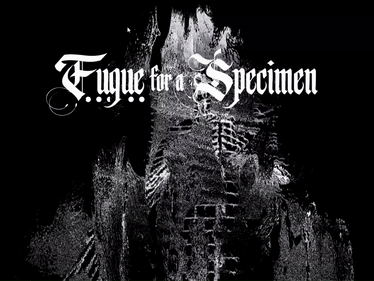
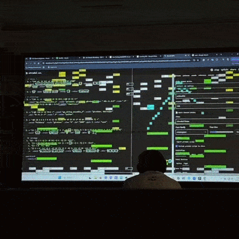
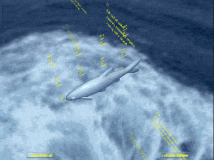

CREATIVE CODE




I am Emi Savage. I am a media artist and undergrad student based in Los Angeles, CA.
I make work that draws you in to the body, the web, and the things in your backyard.
My main disciplines include creative code and graphic design. I also work with 3D modeling, game design, fabrication, and immersive installations.
I am currently earning my bachelor's degree in Media Arts + Practice at the University of Southern California.
In my free time, I like to collect CDs and feel the sun on my back.
This portfolio site is coded by hand with p5.js.



 FINAL.png)